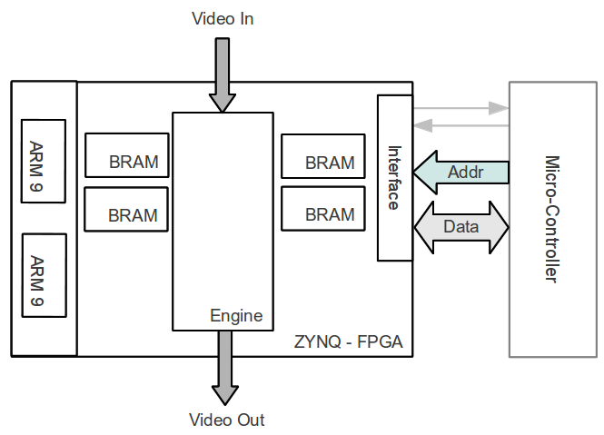
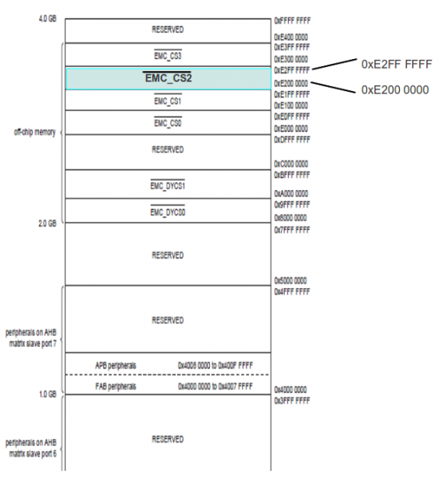
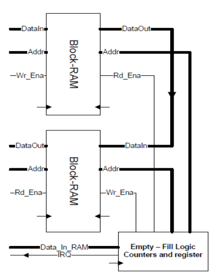
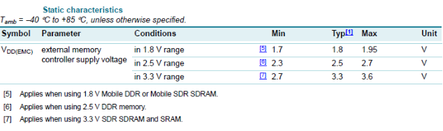
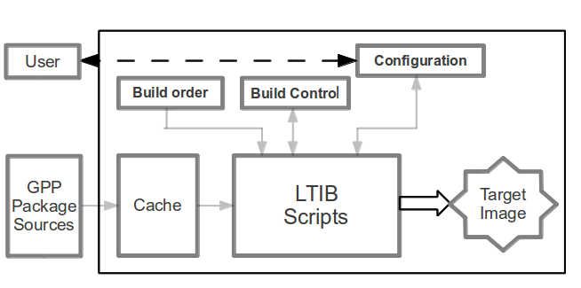
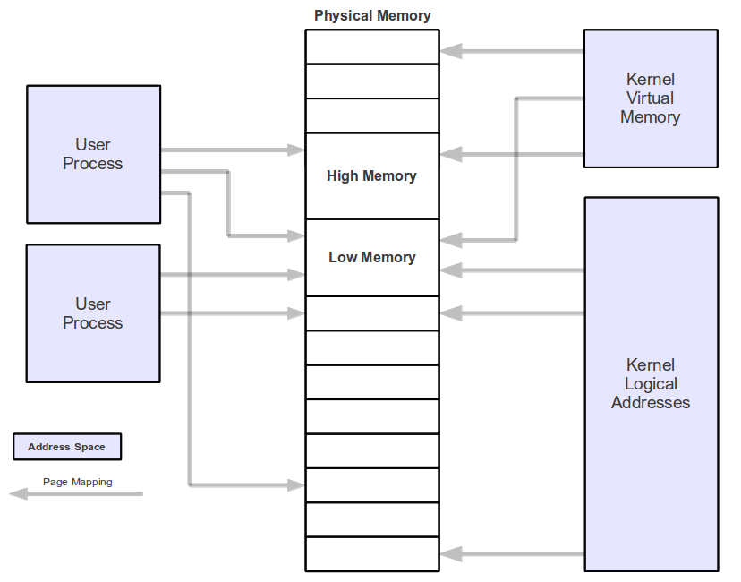

De Kamiel
Offered by: ZirconfleX
http://www.zirconflex.be

Although there is the versatile and powerful ZYNQ extensible processor-centric architecture with its on board dual-core Cortex-A9 ARM processor devices, sometimes it is necessary to use a standalone micro-controller in combination with a processor-less FPGA. Of course a standalone micro-controller can also be used in combination with a ZYNQ FPGA.. This note provides a way to hook a FPGA to an off the shelf available ARM micro-controller. The FPGA can use the micro-controller as process controller or as extended multi-peripheral (USB, LCD, Keyboard, etc.) device. The micro-controller mostly uses the FPGA as a pre-processing high-speed, high performance calculation extension.
An FPGA is primary used for computationally intensive, high-speed and/or parallel processing tasks while the ARM micro-controller is widely used due to its versatility, many manufacturers implement it as the core of their applications (Including he ZYNQ family of devices). Because ARM devices are so widely used across the processor sector there is a variation of operating systems available. An application that caused this note to be written was a video application using an FPGA as high speed – parallel video processing engine and a dedicated ARM micro-controller as human interaction interface. The solution provided is to use one Chip Select area of the micro-controllers External Memory Controller (EMC) in SRAM mode and connect this to the FPGA. Figure 1shows the setup of an example video design.
[The FPGA connects via the External Memory Interface (EMI) to the ARM processor. To prove this concept some design decisions were taken:
With the choice of the Phytec board came the NXP LPC3250-A9 micro-controller. The Phytec board data can be found on: www.phytec.com.
The details of the micro-conroller can be obtained from: www.nxp.com The LPC3220/30/40/50 embedded micro-controllers are designed for low power, high performance applications. NXP achieved these goals using a 90 nano-meter process to implement an ARM926EJ-S CPU core with a vector floating point co-processor and a large set of standard peripherals.
The NXP implementation uses a ARM926EJ-S CPU core with a Harvard architecture, 5-stage pipeline, and an integrated Memory Management Unit (MMU). The MMU provides the virtual memory capabilities needed to support the programming demands of modern operating systems. The ARM926EJ-S also has a hardware based set of DSP instruction extensions, which includes single cycle MAC operations, and hardware based native Jazelle Java Byte-code execution. The implementation has a 32kB instruction cache and a 32kB data cache. The LPC3220/30/40/50 includes a whole set of peripherals and memory support:
The interesting peripheral for this FPGA application is the processors External Memory Interface. The EMI is controlled by the External Memory Controller (EMC), an ARM PrimeCell MultiPort Memory Controller peripheral. The EMC is an Advanced Microcontroller Bus Architecture (AMBA) compliant peripheral, Figure2.
Features of the EMC are:
The External Memory Controller (EMC) has four memory areas where static memory can be connected, and an FPGA can be seen as static memory. The FPGA - micro-processor connection uses for this design the memory range of chip select CS2 (Figure 3). A single FPGA will occupy only a small amount of memory in this address space. When the processor read and/or writes to this EMC_CS2 address space it accesses the contents of registers and memory blocks (FF registers, BlockRAM and/or distributed memory) in the FPGA. Read and write operations from the EMC to static memory a fairly simple and straight forward. Figure 4 shows the waveform of a read operation and figure 5 shows the write operation. In case it might be needed, the EMC controller contains a register set which configures the control access delays for the static memory. For the description an use of these registers consult the LPC3250 User Guide.
Since for the demo/test design, only two Block-RAMs are used, the address decoding is not very fine tuned. The address space to access the Block-RAM appears several times in the CS2 address block of the EMC. When the FPGA is effectively used in an application as co-processor, pre-processor, high-speed calculation or high-speed communication engine for the ARM micro-controller different Block-RAM and separate registers need to be individually addressed. In that case, it will be necessary to fine tune the addressing of the FPGA from the micro-controllers EMC.
In case it is needed, the EMC controller contains a full set of configuration registers for every possible type of memory that can be connected to the EMI interface. It is thus possible to set read and/or write delays, bus turn around times, etc.
To get the finesses of this, please read the LPC datasheet and User Guides.
The interface in the FPGA is very straight forward. It consists of a bidirectional 32-bit data bus and a unidirectional address and control bus. Only these address bits from the micro-controllers address bus are needed for the FPGA application. A block diagram of the ARM interface in the FPGA is shown in Figure 6.
The demonstration design contains two Block-RAM components, one used to write to and one used to read from. The other access ports of both Block-RAMs are connected together and when the Block-RAM for write is completely full, data is transferred to the read Block-RAM. When the read Block-RAM becomes full, data can be read from it, Figure 7. Correctness of the read and write operation can easily be checked this way. Of course, a real life application will probably have multiple Block-RAM. Distributed memory and normal FF registers that can be written and/or read via the EMI interface of the micro-controller.
The connection of the LPC3250 component and the FPGA on PCB board level is very important.
In most cases, in order to let the micro-controller and the FPGA exchange data, it is necessary to use level shifting components. Figure 9 shows a schematic (figure 10a photo) of the setup.
The following description describes how to build and port Linux onto the Phytec board and assumes that the host computer runs a Linux distribution, as Ubuntu. The host computer is connected to the Phytec board via a serial cable (at the side of the PC the RS232 cable is probably converted to USB and a USB driver translates all RS232 communication for the PC).Firstly your own version of Linux needs to compiled, to do this a PC running Linux or at least a PC equipped with a virtual machine running Linux is needed.
The Linux Target Image Builder (LTIB) will be used to generated the embedded kernel. LTIB, the operating flow is shown in figure 11, is a tool used to develop
and deploy Board Support Packages (BSP) for a number of embedded target platforms including PowerPC, ARM, and Coldfire. It can be found and downloaded at:
http://bitshrine.org/ltib/.

Figure 11: LTIB Flow Diagram.
LTIB will not only compile the kernel but also supply a root file system, an additional boot loader (Das U-BOOT) and further everything you need to write your own applications. To start programming, a compiler is needed and since it is not included in with LTIB it needs to be downloaded from the WWW. Recommendation: Download the command line compiler from CodeSourcery. It's free, and other tried/tested compilers were badly documented or not compatible with the ARM926EJ-S core in the NXP LPC3250 on the Phytec development board. Following pages provide a tutorial to build a Linux kernel for the LPC3250 on the Phytec PhyCore board.
REMARK: In the commands that should be typed at the command line heave the ComicSans MSfont, that way they can easily be recognized.
mkdir lpc3250
cd lpc3250
./lpc3250> wget http://www.bitshrine.org/netinstall
./lpc3250> perl netinstall
./lpc3250> sudo /usr/sbin/visudo
This allows editing of the “sudoers”file.
Enter the line:
<username> ALL = NOPASSWD: /bin/rpm, /opt/ltib/usr/bin/rpm
Restart the install process by executing again the “perl netinstall“ script. The setup
will ask for a install path, provide the full path as: /home/<username>/”Path”/lpc3250/
cd /home/<username>/lpc3250
~/lpc3250> vi netinstall
./lpc3250/ltib qs> ./ltib ‐ --configure
~/lpc3250> cd ltib‐qs
./lpc3250/ltib qs> ./ltib
<pre>
* A menu with a lot of options will pops-up.
The recommendation is to start experimenting with the settings. The settings made in the menu
are very specific and depending on the application.
** The settings that worked for this test application are given
in table 1.
| System features | [*] cache target rpms |
|---|---|
| Target C library type | (X) glibc |
| C library package | (X) from toolchain only |
| Toolchain component options | [] libc shared libraries [] c++ shared libraries [] libgcc.so* |
| Toolchain | (X) gcc-3.4.5-glibc 2.3.6 (soft_float) |
| Enter any CFLAGS for gcc/g++ | -fsigned-char-msoft-float-O3 |
| bootloader choice | (X)u-boot1.3.3 for the Phytec3250 board |
| u boot flags | |
| kernel | (X) Linux 2.6.27.8 for LPC3250 / Phytec3250 |
| Always rebuild the kernel | [*] (checked) |
| Produce cscope index | [ ] (unchecked) |
| Kernel preconfig | Linux-2.6.27.8-phy3250.config |
| Include kernel headers | [ ] (unchecked) |
| Configure the kernel | [ ] (unchecked) |
| Leave the kernel sources after building | [*] (checked) |
| Package list | Check only: [] busybox [] module dependencies [] mp3play [] mtd utils [*] Skeleton base files |
| Target System Configuration Options Check only: | [] start networking [] start syslogd/klogd |
| Target Image Generation Options | Target image: (NFS only) |
~/lpc3250/ltib‐qs> ./ltib ‐‐configure Note that LTIB will only enter the configuration menu the first time after install when typing ./ltib a the prompt. After the first run, typing ./ltib at the prompt will rebuild modified source. It is thus necessary to type ./ltib ‐‐configure in order to modify the configuration of LTIB.
The list of all options for LTIB is showed in table 1.
| Start block | End Block | Number of Blocks | Size (KB) | Description |
|---|---|---|---|---|
| 0 | 0 | 1 | 16 | Kickstart Loader |
| 1 | 24 | 24 | 384 | Stage 1 Loader |
| 25 | 89 | 65 | 1001 | Das U-boot |
| 90 | 99 | 10 | 160 | Das U-boot environment variables |
| 100 | 355 | 256 | 4000 | Linux Kernel |
| 356 | 4095 | 3740 | 58440 | Linux File System |
Make sure no other boot loader is running and delete all previous boot loader environments.
phy3250> erase 90 10 0
phy3250> load blk uimage raw 0x80100000
phy3250> nsave
phy3250> boot
uboot> nand erase 0x590000 0x3a70000; nand write.jffs2 0x80100000
0x590000 <image size>*
phy3250> load blk ROOTFS~1.JFF raw 0x80100000
phy3250> nsave
phy3250> boot
uboot> nand erase 0x590000 0x3a70000; nand write.jffs2 0x80100000
0x590000 <image size>*
- uboot> bootargs ‘console=ttyS0,115200n81 root=/dev/mtdblock3 rw rootfstype=jffs2 init=/sbin/init’
- uboot> setenv bootcmd ‘nboot.jffs2 0x80100000 0x0 0x190000; bootm’
uboot> saveenv Congratulations, A customized ready to start Linux kernel is available for the Phytec development board. Type:
If the Linux build procedure is done correctly the system should boot to a prompt. What's now needed is some home made programming to show that the micro-controller can write and read from the BlockRam memory in the FPGA. A normal boot procedure, after reset, takes following steps:
As earlier written a embedded system is not needed to run a communication between the ARM micro-controller and the FPGA but it helps ease writing applications in more complex application. To prove the OS approach, an embedded Linux operating system is chosen. Reasons for this choice are:
First: Using the CodeSourcery compiler is not a must. If another compiler is available or more familiar, please use that. CodeSourcery is used in the application note because I liked it, it is free (lite version) and works perfect. One thing to remark is that all the source files of your BSP have to be supplied manually. These files are available at:
ltib-10-1-1a-sv\rpm\BUILD\linux-2.6.27.8 \include
Insert these files into:
.\CodeSourcery\Sourcery_G++_Lite\arm-none-linux-gnueabi\libc\usr\include.
The following provides a help in understanding memory management of Linux based systems.
Hint: Read "Linux Device Drivers" from O'Reilly Media if deeper understanding of Linux memory management is wanted or needed (The book is available in electronic format for free).
Linux is a virtual memory system, meaning that the addresses seen by user programs do not directly correspond to the physical addresses used by the hardware. Virtual memory introduces a layer of indirection that allows a number of nice things to happen. Programs running on the system can allocate far more memory than physically available. Even single processes can occupy a virtual address space larger than the system's physical memory. Virtual memory also allows the program to play a number of tricks with the process's address space, including mapping the program's memory to device memory.The following text list the address types used in Linux and figure 12 shows how these address types related to physical memory.
Physical addresses:
The addresses used between the processor and the system’s memory. Physical addresses are 32- or 64-bit quantities; even 32-bit systems can use larger physical addresses in some situations.
Bus addresses:
Bus addresses are highly architecture dependent. They are used between peripheral buses and memory. These are often the same as the physical addresses used by the processor, but that is not necessarily always the case. Some architectures provide an I/O memory management unit (IO-MMU) that remaps addresses between a bus and main memory. An IO-MMU can make life easier in a number of ways (A buffer scattered in memory can appear continuous to the device). Programming the IO-MMU is an extra step that must be performed when setting up DMA operations.
User virtual addresses:
These are the regular addresses seen by user-space programs. User addresses are either 32 or 64 bits in length, depending on the underlying hardware architecture, and each process has its own virtual address space.
Kernel logical addresses:
Make up the normal address space of the kernel and map some portion (perhaps all) of main memory. These addresses are often treated as if they were physical addresses. On most architectures, logical addresses and their associated physical addresses differ only by a constant offset. Logical addresses use the hardware’s native pointer size and, therefore, may be unable to address all of physical memory on heavily equipped 32-bit systems. Logical addresses are usually stored in variables of type unsigned long or void *. Memory returned from “kmalloc” has a kernel logical address.
Kernel virtual addresses:
Kernel virtual addresses are similar to logical addresses in that they are a mapping from a kernel space address to a physical address. Kernel virtual addresses do not necessarily have the linear, one-to-one mapping to physical addresses that characterize the logical address space. All logical addresses are kernel virtual addresses, but many kernel virtual addresses are not logical addresses. For example, memory allocated by “vmalloc” has a virtual address (but no direct physical mapping). The “kmap” function (described later in this chapter) also returns virtual addresses. Virtual addresses are usually stored in pointer variables.
The physical memory discussed above is divided into discrete units called pages. Much of the system’s internal handling of memory is done on a per-page basis. Page size varies from architecture to architecture but most systems currently use pages of 4096 bytes.
The FPGA is accessed as memory via the mmap() function, discussed hereafter. In order to use the function some information how memory can be accessed in a uniform way in order to make design portable. The only device independent way to get to the physical memory with the mmap() function is by using the “/dev/mem” file.
This /dev/mem file is a special file that provides access to physical memory. The size of the file is equal to the amount of available physical memory. A system running 32-bit operating environment can have access to memory larger than 4GB, and it is even possible to access memory beyond 4GB..
The constant PAGE_SIZE (defined in
Discard the offset and shift the rest to the right then the result is called a page frame number (PFN). Convert between page frame numbers and addresses is a fairly common operation. The macro
PAGE_SHIFT tells how many bits must be shifted to provide this conversion.

Figure 12: Address types used by Linux
Synopsis:
#include <sys/mman.h>
void *mmap (
void *addr,
size_t length,
int prot,
int flags,
int fildes,
off_t offset
);
int munmap (
void *addr,
size_t length
);
Syntax description:
This function creates a new mapping in the virtual address space of the calling process. Memory mapping allocates a block of memory so that fetching from the memory block will obtain the corresponding bytes of the file. Flags allow that the memory mapping is capable to change the corresponding bytes of the file when data is stored in the memory block.
addr:
Specifies the starting address for the new mapping. The argument can be either NULL or a memory address. If NULL the system chooses the address at which to create the mapping. This is the most portable method of creating a new mapping. If not NULL, then the system will attempt to allocate the memory for the mapping near the address specified this is the nearby page boundary.The address of the new mapping is returned as the result of the call.
len:
Specifies the number of bytes, length, of the file to map. The length value cannot cause the mapping to extend beyond the end of the file. If length is not specifying an integral amount of pages, the map is extended to the next highest page boundary. The left space is set to binary zeroes.
prot:
Specifies the protection status of the mapped memory. It is either PROT_NONE or the bit-wise OR of one or more of the described flag constants below:
Note 1: It is not permitted to specify PROT_WRITE when the file descriptor of the file doesn't allow writing.
Note 2: Calling the mproctect function allows the protection status of the mapped memory to be changed.
flags:
Specifies one or more option flags, combined using the or operator (|). Each flag should be specified as one of the following symbolic constants.
the overlapped part of the existing mapping(s) will be discarded. If the specified address cannot be used, mmap() will fail.
fd:
File descriptor-argument specifies an open file descriptor for a file or other object to be mapped.
offset:
Specifies the first byte of the file to be mapped. The offset must be an exact multiple of the system page size (returned by sysconf(_SC_PAGE_SIZE and in most cases 4096 bytes)
#include <stdio.h>
#include <stdlib.h>
#include <unistd.h>
#include <string.h>
#include <errno.h>
#include <signal.h>
#include <fcntl.h>
#include <ctype.h>
#include <termios.h>
#include <sys/types.h>
#include <sys/mman.h>
#define FATAL do { fprintf(stderr, "Error at line %d, file %s (%d) [%s]\n", \
__LINE__, __FILE__, errno, strerror(errno)); exit(1); } while(0)
/*********************************************************************/
/* Define masks */
/* for read and write */
/********************************************************************/
//#define ADDR_RANGE_MASK 0xE2000FFF // "00111111111111" Allows only the the
// 12 first bit's to be set since we use the
// first 12 bits for addressing in the FPGA
//#define READ_MASK 0xE2001FFF // "01111111111111" read bit 1 & write bit 0
//#define WRITE_MASK 0xE2002FFF // "10111111111111" read bit 0 & write bit 1
//#define BASE_ADDR 0xE2000000 //CS_2 range starts @ 0xE2000000
/********************************************************************/
/* Define size to allocate */
/********************************************************************/
#define MAP_SIZE 4096UL // needs to be looked at....
#define MAP_MASK (MAP_SIZE - 4)
int main(int argc, char **argv) {
int fd;
void *map_base, *virt_addr;
unsigned long read_result, writeval;
off_t target;
if(argc < 2){ //error message in case of wrong input
fprintf (stderr, "\nUsage:\t%s { address } [ data ]\n"
"\taddress : memory address to act upon\n"
"\tdata : data to be written (32bit)\n\n"
"To [i]nitialize type only i leaving out the addresses \n\n",
argv[0] );
exit(1);
}
/********************************************************************/
/* Init */
/********************************************************************/
if(strcmp(argv[1],"i" ) == 0 ) //strcmp() returns 0 if strings are the same (case sensitive)
{
printf ("init started.\n");
target = 0x31080240;
// Open /dev/mem file & error handling
if ((fd = open ("/dev/mem", O_RDWR | O_SYNC)) == -1) FATAL;
printf ("/dev/mem opened.\n");
fflush (stdout);
// Map one page
map_base = mmap (0, MAP_SIZE, PROT_READ | PROT_WRITE, MAP_SHARED, fd, target & ~MAP_MASK);
if (map_base == (void *) -1) FATAL;
printf ("Memory (0x31080240) mapped at address %p.\n", map_base);
fflush (stdout);
// start WRITE
virt_addr = map_base + (target & MAP_MASK);
writeval = 0x2; //32Bit data bus setting for static memory of CS_2
*((unsigned long *) virt_addr) = writeval;
printf ("Written 0x%X\n", writeval);
fflush (stdout);
printf ("init successful\nRestart program to write or read data\n\n");
// stop WRITE
}
else
/********************************************************************/
/* Read/Write */
/********************************************************************/
{
target = strtoul (argv[1], 0, 0); // Parsing the input & leaving out leading 0 & 0x's
// Open /dev/mem file & error handling
if( (fd = open("/dev/mem", O_RDWR | O_SYNC)) == -1) FATAL;
printf ("/dev/mem opened.\n");
fflush (stdout);
// Map one page
map_base = mmap (0, MAP_SIZE, PROT_READ | PROT_WRITE, MAP_SHARED, fd, target & ~MAP_MASK);
if (map_base == (void *) -1) FATAL;
printf ("Memory mapped at address %p.\n", map_base);
fflush (stdout);
virt_addr = map_base + (target & MAP_MASK);
// start READ
if (argc <= 2) {
read_result = *((unsigned long *) virt_addr); //unsigned long fits the 32 bit bus data
// stop READ
printf ("Value at address 0x%X (%p): 0x%X\n", target, virt_addr, read_result);
fflush (stdout);
}
// start WRITE if there is data to write given in the arguments
if (argc > 2) {
writeval = strtoul(argv[2], 0, 0);
*((unsigned long *) virt_addr) = writeval;
printf ("Written 0x%X\n", writeval);
fflush (stdout);
}
// stop WRITE
}
/********************************************************************/
/* UnMap one page */
/********************************************************************/
if (munmap(map_base, MAP_SIZE) == -1) FATAL;
close (fd);
return 0;
}
This is an article I wrote in 2013 on the eLinux wikki page for embedded systems. The article itself can be found here#The_FPGA).